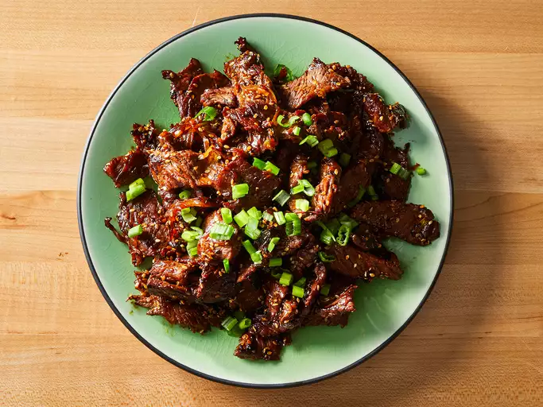

Home
Easy and Nice Bulgogi

Description
Bulgogi, or Korean barbecued beef, is made with marinated sliced beef. Most recipes call for crushed pear to tenderize the meat. My boyfriend's Korean mother says Coca-Cola can also be used for the same purpose. This recipe uses very thinly-sliced sirloin steak, so tenderization isn't necessary. It's delicious served with rice, lettuce leaves, and chile paste or kimchi.
Ingredients
- ⅓ cup soy sauce
- 2 green onions, chopped (dark green parts separated)
- ¼ yellow onion, thinly sliced
- 3 tablespoons white sugar
- 3 cloves garlic, minced
- 2 tablespoons toasted sesame seeds
- 1 tablespoon sesame oil
- ¼ teaspoon Korean red pepper flakes
- ¼ teaspoon minced fresh ginger
- ⅛ teaspoon ground black pepper
- 1 ½ pounds beef sirloin steak, thinly sliced
- 1 teaspoon honey (or to taste)
Steps
- Gather all ingredients.
- Whisk soy sauce, chopped white/light green onion parts, yellow onion, sugar, garlic, sesame seeds, sesame oil, red pepper flakes, ginger, and black pepper in a large bowl.
- Add sliced beef, toss to coat evenly, and cover. Marinate in the fridge for at least 1 hour, up to 1 day.
- Heat a skillet or wok over medium heat. Cook steak and marinade in batches, stirring often. Add honey as it cooks. Cook about 5 minutes until steak is browned and caramelized.
- Garnish with reserved dark green onion parts and serve.